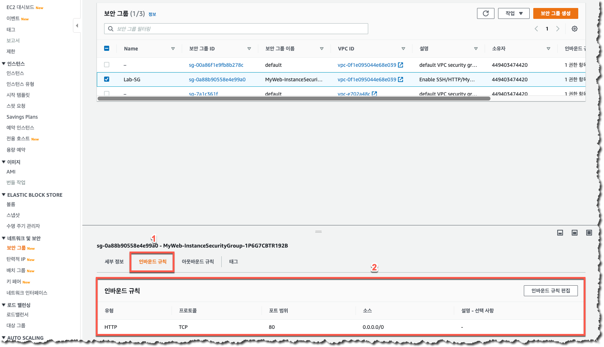
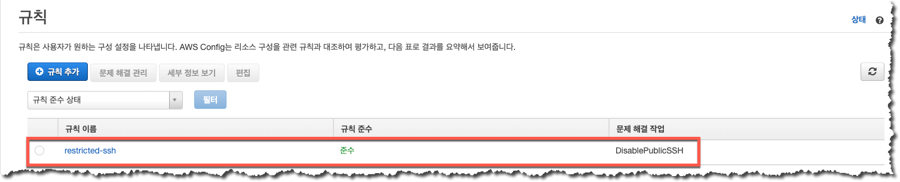

AWS Config 규칙에서의 문제 해결 작업은 AWS Systems Manager Automation을 사용하여 실행됩니다. 이전 과정에서 생성한 사용자 정의 Automation 을 AWS Config 규칙의 “문제 해결” 로 지정하여 사용하도록 하겠습니다.
“자동 수정” 옵션이 “예” 로 선택되어 있는 경우 문제 해결 작업이 바로 실행이 되게됩니다. 따라서, 문제 해결 작업이 즉시 실행되어 예기치 않은 상황이 발생할 수 있으므로 실제 운영 환경에서는 등록되는 “문제 해결” 작업이 정확하게 어떤 기능으로 구현이 되어 있으며 “문제 해결” 적용 시 어떤 영향이 발생할 수 있는지 정확하게 파악한 후 “자동 수정” 옵션을 활성화하시기 바랍니다.
조금 전 실행한 AWS Config 규칙의 문제 해결 작업이 실제로 정상적으로 완료되었는지 확인하기 위하여 EC2 메뉴의 Secuirty Group 설정을 확인하도록 하겠습니다.
아래와 같이 EC2 Security Group 메뉴로 이동한 후 “인바운드 규칙” 메뉴를 클릭하여 인바운드 규칙 중 0.0.0.0/0 Port 22 규칙이 제거되어 있는 것을 확인하시기 바랍니다. 
AWS Config 규칙에서도 아래와 같이 “restricted-ssh” 규칙의 상태가 “준수” 상태인 것을 확인합니다. 
“문제 해결” 작업이 성공적으로 완료되더라도 Config 규칙의 상태가 “미준수” 에서 “준수” 로 바뀌는데에는 몇 분의 시간이 소요될 수 있으니 잠시 기다리셨다가 확인하시기 바랍니다.